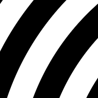

Spiral
Spiral renderer
Type
Spiral type
name: type
type: enum
X
Spiral origin X coordinate
name: x
type: double
default: 0.50
minimum: -inf
maximum: +inf
ui-minimum: 0.00
ui-maximum: 1.00
ui-gamma: 1.00
ui-step-small: 0.00
ui-step-big: 0.10
ui-digits: 3
unit:relative-coordinate
axis:x
Y
Spiral origin Y coordinate
name: y
type: double
default: 0.50
minimum: -inf
maximum: +inf
ui-minimum: 0.00
ui-maximum: 1.00
ui-gamma: 1.00
ui-step-small: 0.00
ui-step-big: 0.10
ui-digits: 3
unit:relative-coordinate
axis:y
Radius
Spiral radius
name: radius
type: double
default: 100.00
minimum: 1.00
maximum: +inf
ui-minimum: 1.00
ui-maximum: 400.00
ui-gamma: 1.00
ui-step-small: 1.00
ui-step-big: 10.00
ui-digits: 2
unit:pixel-distance
Base
Logarithmic spiral base
name: base
type: double
default: 2.00
minimum: 1.00
maximum: +inf
ui-minimum: 1.00
ui-maximum: 20.00
ui-gamma: 2.00
ui-step-small: 0.01
ui-step-big: 1.00
ui-digits: 3
visible:type {logarithmic}
Balance
Area balance between the two colors
name: balance
type: double
default: 0.00
minimum: -1.00
maximum: 1.00
ui-minimum: -1.00
ui-maximum: 1.00
ui-gamma: 1.00
ui-step-small: 0.00
ui-step-big: 0.10
ui-digits: 3
Rotation
Spiral rotation
name: rotation
type: double
default: 0.00
minimum: 0.00
maximum: 360.00
ui-minimum: 0.00
ui-maximum: 360.00
ui-gamma: 1.00
ui-step-small: 1.00
ui-step-big: 15.00
ui-digits: 2
unit:degree
Direction
Spiral swirl direction
name: direction
type: enum
Color 1
name: color1
type: color
default: rgb(0.0000, 0.0000, 0.0000)
role:color-primary
Color 2
name: color2
type: color
default: rgb(1.0000, 1.0000, 1.0000)
role:color-secondary
Width
Width of the generated buffer
name: width
type: int
default: 1024
minimum: 0
maximum: +inf
ui-minimum: 0
ui-maximum: 4096
ui-gamma: 1.00
ui-step-small: 1
ui-step-big: 100
role:output-extent
unit:pixel-distance
axis:x
Height
Height of the generated buffer
name: height
type: int
default: 768
minimum: 0
maximum: +inf
ui-minimum: 0
ui-maximum: 4096
ui-gamma: 1.00
ui-step-small: 1
ui-step-big: 100
role:output-extent
unit:pixel-distance
axis:y
pads: output
parent-class: GeglOperationPointRender
categories: render
source: operations/common-gpl3+/spiral.c
position-dependent: true
license: GPL3+
 This page is part of the online GEGL Documentation, GEGL is a data flow based image processing library/framework, made to fuel GIMPs high-bit depth non-destructive editing future.
This page is part of the online GEGL Documentation, GEGL is a data flow based image processing library/framework, made to fuel GIMPs high-bit depth non-destructive editing future.